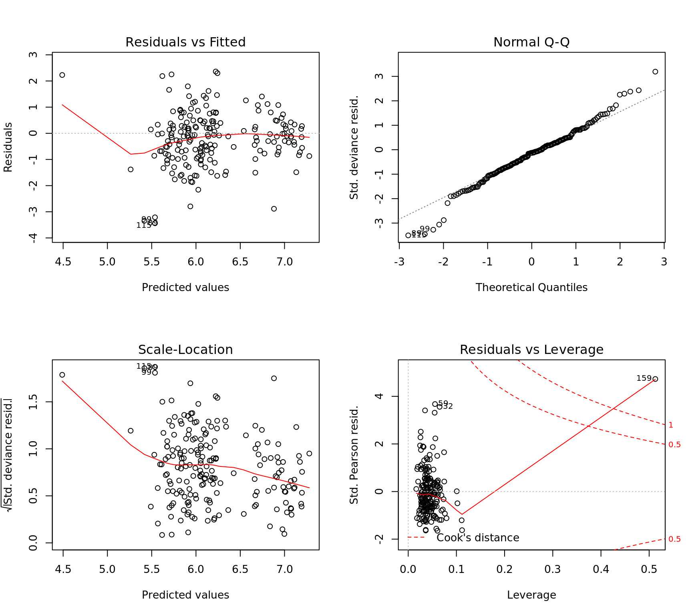
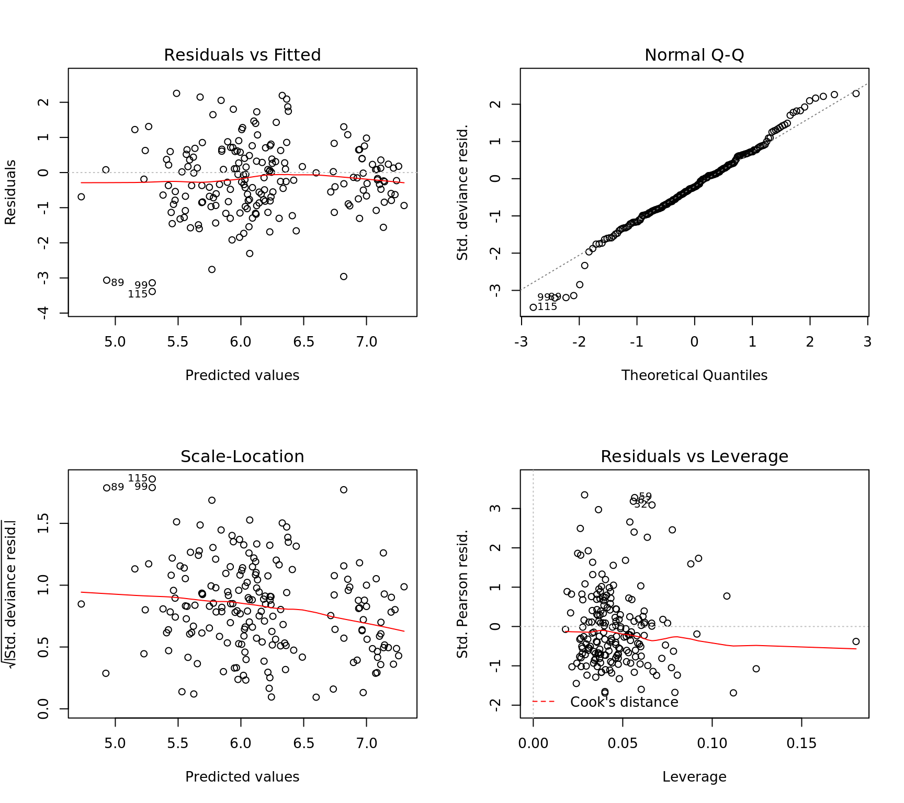

Poisson Regression
library(MASS)
dta = read.csv("data/pharynx.csv")
head(dta) CASE INST SEX TX GRADE AGE COND SITE T_STAGE N_STAGE ENTRY_DT STATUS
1 1 2 2 1 1 51 1 2 3 1 2468 1
2 2 2 1 2 1 65 1 4 2 3 2968 1
3 3 2 1 1 2 64 2 1 3 3 3368 1
4 4 2 1 1 1 73 1 1 4 0 5768 1
5 5 5 1 2 2 64 1 1 4 3 9568 1
6 6 4 1 2 1 61 1 2 3 0 10668 0
TIME
1 631
2 270
3 327
4 243
5 916
6 1823## Poisson Regression Model for Survival Time
mdl = glm(TIME ~ SEX + TX + AGE + COND + SITE + T_STAGE + N_STAGE + STATUS,
family = poisson(), data = dta)
## Negative Binomial Model for Survival Time
mdl2 = glm.nb(TIME ~ SEX + TX + AGE + COND + SITE + T_STAGE + N_STAGE + STATUS,
maxit = 100, data = dta)
## Dispersion paramater > 0 so poisson is not appropriate, negative binomial is a better model
par(mfrow = c(2,2))
plot(mdl2)
## Remove the outlier observation and retrain
dta = dta[-159, ]
mdl.nb = glm.nb(TIME ~ SEX + TX + AGE + COND + SITE + T_STAGE + N_STAGE + STATUS,
maxit = 100, data = dta)
summary(mdl.nb)
Call:
glm.nb(formula = TIME ~ SEX + TX + AGE + COND + SITE + T_STAGE +
N_STAGE + STATUS, data = dta, maxit = 100, init.theta = 3.121080189,
link = log)
Deviance Residuals:
Min 1Q Median 3Q Max
-3.3855 -0.8138 -0.2142 0.4034 2.2540
Coefficients:
Estimate Std. Error z value Pr(>|z|)
(Intercept) 7.646448 0.369792 20.678 <2e-16 ***
SEX 0.142239 0.098324 1.447 0.1480
TX -0.140805 0.082706 -1.702 0.0887 .
AGE 0.006148 0.003802 1.617 0.1059
COND -0.510610 0.076821 -6.647 3e-11 ***
SITE -0.006501 0.034988 -0.186 0.8526
T_STAGE -0.119522 0.053337 -2.241 0.0250 *
N_STAGE -0.058860 0.036701 -1.604 0.1088
STATUS -0.886395 0.094450 -9.385 <2e-16 ***
---
Signif. codes: 0 '***' 0.001 '**' 0.01 '*' 0.05 '.' 0.1 ' ' 1
(Dispersion parameter for Negative Binomial(3.1211) family taken to be 1)
Null deviance: 385.38 on 193 degrees of freedom
Residual deviance: 205.16 on 185 degrees of freedom
AIC: 2704.2
Number of Fisher Scoring iterations: 1
Theta: 3.121
Std. Err.: 0.306
2 x log-likelihood: -2684.213 plot(mdl.nb)